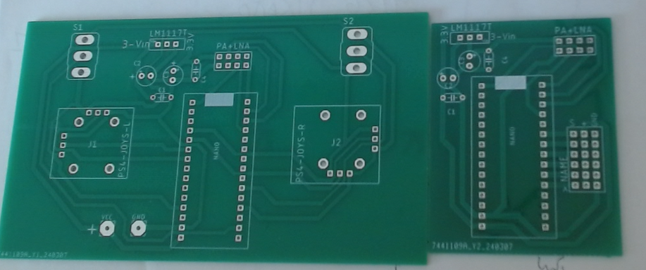
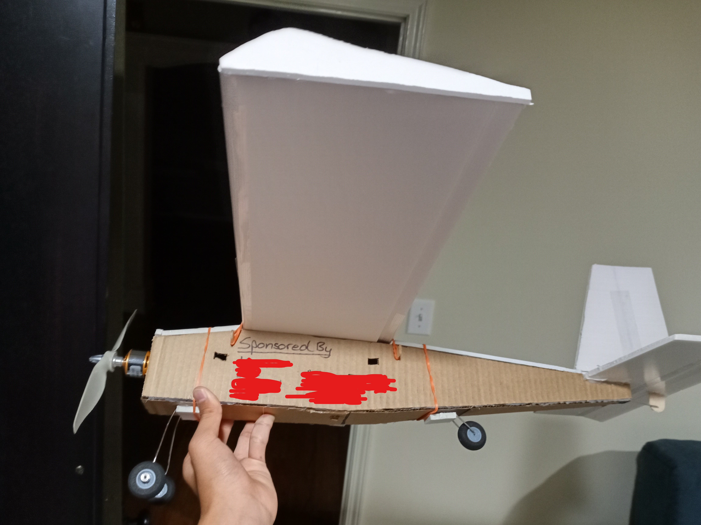

I came across a YouTube video by the creator Kendin Yap, where he built a simple RC plane using only foamboard, metal rods, and other accessible materials and electronics. His resourceful and DIY approach immediately inspired me to attempt building one of my own.
You can watch the video here or below: https://www.youtube.com/watch?v=BKnxkAgBggM.
Building the Plane
However, as I began sourcing materials, I encountered some obstacles. Several of the components linked in his video were out of stock, forcing me to find alternatives. For instance, the foamboard I purchased was slightly smaller than the one used in the original design, which meant I had to scale the entire plane down proportionally.
Kendin Yap used lightweight balsa wood to mount the motor at the rear of the plane, but I didn’t have any on hand. I substituted it with a heavier type of wood, which unfortunately added unnecessary weight.
After assembling the plane, I quickly ran into structural issues. The metal rod that supported the frame began to buckle under the plane’s weight, and the airframe felt flimsy—likely due to the different foamboard material. In an effort to reinforce the structure, I added metal axles, but this only worsened the weight issue.
*I don't have any pictures of the plane that I could find.
Electronics
Despite the setbacks, I was able to build the custom electronics featured in Kendin Yap’s design. He provided Gerber files (used for PCB manufacturing), which I sent to JLCPCB. Once the boards arrived, I soldered on the necessary components, including the microcontroller and antenna. The custom 6-channel transmitter and receiver worked flawlessly. During a field test with my brother, we confirmed it had a range of at least a quarter mile.
These were the PCBs I got from JLCPCB. The right one if the reciever, the left one is the transmitter. The assembled versions can been seen in the plane image below.
This is a video of the transmitter and reciever working wirelessly to control a servo motor.
Outcome
The plane used three servo motors—two for the left and right ailerons and one for the elevator located on the rear stabilizer. After finally finishing the build, I tested the plane by hand-launching it from my driveway. Sadly, the plane immediately dropped and crashed into the concrete. The cause was clear: it was simply too heavy.
I didn’t let this failure discourage me. I salvaged the electronics and decided to start over, this time using a different design based on another of Kendin Yap’s older videos: https://www.youtube.com/watch?v=eHdxx4qpVko.
This second design required only two servo motors—one for the rear fin (rudder) and one for the elevator. I also made several modifications to accommodate the materials I had on hand.
The new version was significantly lighter, structurally sound, and more aerodynamic than the first. I often woke up early just to make progress on the build—I was that excited. Once completed, I attempted a takeoff from the ground, only to encounter a new problem: the plane would veer sharply to the left during acceleration, preventing a straight lift-off.
Side view of the plane. The sponsors were sensored for privacy.
After doing some research and asking for advice, I learned that this could be caused by P-factor (a phenomenon affecting propeller-driven aircraft), or potentially misaligned wheels. Despite my efforts, I couldn’t fully resolve the issue.

This was the plane I built from the 2nd video. The transmitter and reciever are shown as well.
Outcome #2
Eventually, I decided to go for a takeoff anyway. The plane began to accelerate, lifted just an inch off the ground, and then—BAM—slammed into the curb. The damage was extensive: a broken propeller, a crushed nose, and a crumpled fuselage.
While the project remains unfinished, the experience was far from a failure. I learned a great deal—how to work with Arduino microcontrollers, how RC plane mechanics function, and how to troubleshoot and adapt when things don’t go according to plan.
This project was only possible thanks to Kendin Yap’s videos, which served as both a guide and an inspiration. I’m excited to continue learning, iterating, and eventually achieving successful flight.